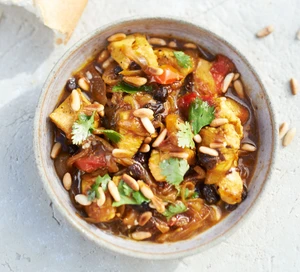

Andalusian chicken

Description
Yummy meal my boyfriend introduced to me. 🐔
Ingredients for 3 persons
- large pinch of saffron
- ½ chicken stock cube, crumbled into 100ml boiling water
- 2 tbsp olive oil
- 1 small onion, thinly sliced
- 2 large chicken breasts or 6 boneless, skinless thighs, cut into bite-sized pieces
- large pinch of ground cinnamon
- 1 red chilli, deseeded and chopped
- 2 tbsp sherry vinegar
- 1 tbsp clear honey
- 6 cherry tomatoes, quartered
- 1 tbsp raisins
- handful of coriander, roughly chopped
- 25g toasted pine nuts or almonds
- crusty bread, to serve
Steps
- Put the saffron to the hot stock to soak. Heat the oil in a medium pan and cook the onion until it is soft
and just beginning to turn golden. Push to the side of the pan and add the chicken. Cook for a few mins
until the chicken is browned all over.
- Add the cinnamon and chilli, and cook for a couple of mins. Add the stock, vinegar, honey, tomatoes and
raisins.
Bring to the boil, turn down the heat and simmer for 10 mins until the sauce is reduced
and the chicken is cooked through. When ready to serve, scatter with the coriander and nuts,
and serve with bread on the side.